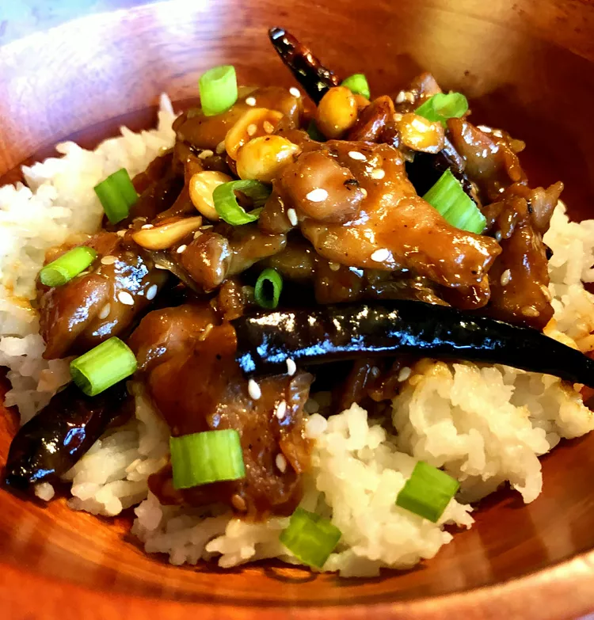

Chongqing Chicken

Description
This is similar to Kung Pao Chicken,
especially if you add the optional
peanuts. You can control the
spiciness of this dish by the
number of chile peppers you add.
I like it spicy so I add extra
chile peppers.
Ingredients
- 1 tablespoon cooking sherry
- 1 tablespoon soy sauce
- 2 teaspoons cornstarch
- ¼ teaspoon salt
- ¼ teaspoon ground black pepper
- 1 pound boneless chicken thighs, cut into bite-sized pieces
- ½ cup chicken stock
- 1 tablespoon garlic chile paste
- 1 tablespoon soy sauce
- 1 tablespoon balsamic vinegar
- 1 tablespoon white sugar
- 1 teaspoon cornstarch
- 1 teaspoon sesame seeds
- ½ cup dried red chile peppers
- 3 tablespoons oil, divided
- 1 teaspoon freshly cracked pepper
- 2 teaspoons grated fresh ginger
- 2 cloves garlic, pressed
- 2 scallions, sliced, white and green parts separated
Instructions
- Mix cooking sherry, soy sauce, cornstarch, salt and pepper for the marinade in a bowl. Add chicken pieces and set aside to marinate.
- Combine chicken stock, chile paste, soy sauce, balsamic vinegar, sugar, and cornstarch for the sauce in a bowl. Stir until well combined, add sesame seeds, and set aside.
- Heat 1 tablespoon oil in a skillet over medium heat. Add chile peppers and cook until they turn dark red, 1 to 2 minutes. Remove from skillet and set aside.
- Add remaining 2 tablespoons oil to the skillet and fry chicken pieces until lightly browned, about 5 minutes. Add cracked pepper, ginger, garlic, salt, white parts of scallions, and peanuts. Fry an additional 1 to 2 minutes. Add reserved chiles and sauce. Cook and stir until mixture has thickened or desired consistency is reached, about 5 minutes. Garnish with additional sesame seeds and green parts of scallions.